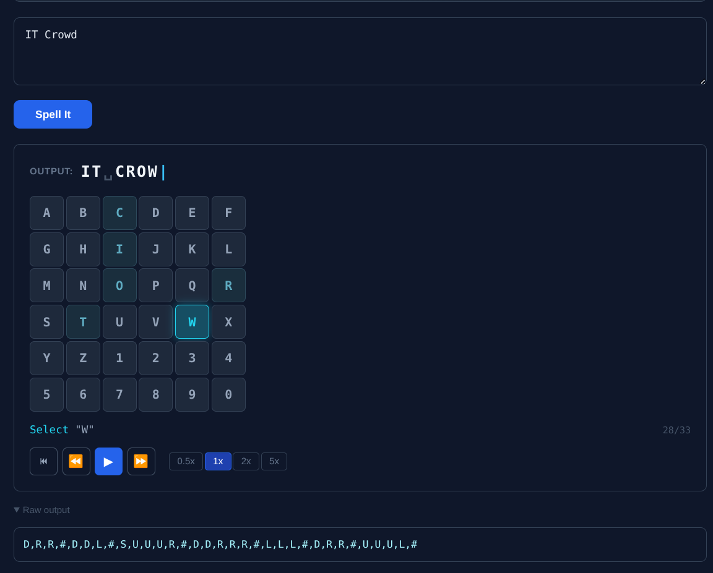

six problems, six languages, one AI
I used AI to solve six coding exercises in six languages and write 968 tests. The language choice was mine. The architecture was mine. The AI wrote the code.
what this actually is

Six coding exercises. Each solved in a different language, each language chosen to match the problem domain. Each implementation written by AI. Every architectural decision made by me.
That last part is the one that matters. Anyone can prompt a model to write code. The difference is knowing which language to use, what patterns to apply, what edge cases to test, and when the output is wrong. I have 25 years of experience telling the difference between code that works and code that works right. AI let me execute that judgment across six languages in one pass.
cash register — rust
94 tests.
I chose rust because money is the canonical argument for integer arithmetic. Floats have rounding errors. $1.10 + $2.20 doesn't equal $3.30 in IEEE 754. Every financial system I've worked on uses integer cents to avoid this, and rust's type system makes it natural. You literally cannot accidentally introduce a float into a calculation that expects integers.
The problem calls for different pricing strategies: buy-one-get-one, bulk discounts, tiered pricing. I told the model to use the strategy pattern via traits. Each pricing rule is a trait implementation. Adding a new one means adding a new struct and implementing the trait. The compiler checks that you've covered every variant.
No runtime reflection. No instanceof chains. The type system enforces the contract. The model wrote the implementations. I chose the architecture.
missing number — zig
70 tests.
Find the missing number in a sequence. A tight algorithmic problem, small input, clear math, performance-sensitive. I chose zig because it's a systems language worth demonstrating fluency in, separate from rust.
Zig's explicit allocator model forces you to think about memory at every step. No hidden allocations, no garbage collector. You say what you allocate and when you free it. For a problem this small, the entire memory lifecycle is visible in one function.
The comptime features let you do compile-time computation that would be runtime work in other languages. Type-safe. No code generation step. The model handled the implementation. I picked the language because showing range across the systems tier matters.
morse code — perl
232 tests.
This is a text processing problem. Split a string on delimiters, map through a lookup table, handle edge cases around word boundaries, numbers, and punctuation. I chose perl because perl was built for this.
The model wrote the regex engine work, the hash lookups, the split/join transformations. I chose perl because using python or javascript for text processing is using a hammer to drive a screw. It goes in, but it's not the right tool.
232 tests for a lookup problem seems like a lot, but morse code has more edge cases than you'd expect: prosigns, number prefixes, word separators, invalid input, mixed case, whitespace handling. I directed the model to test every one. The test count isn't a flex. It's the natural result of asking "what could go wrong?" and not stopping until there's a test for it.
on-screen keyboard — python
94 tests.
Model an on-screen keyboard and calculate optimal typing paths. I chose python because if this were production code, it'd be scripting device input on a DVR or smart TV, a space where python dominates.
The solution models the keyboard layout as a list and an index. The model wrote the pathfinding. I chose python because readability matters when you're demonstrating code to someone who doesn't know the language. A hiring manager should be able to read this and understand the algorithm.
gilded rose — go
107 tests.
The Gilded Rose kata is a classic refactoring exercise. You get a messy conditional and need to turn it into something extensible. I chose go because business rules and polymorphism via interfaces is what go does best.
I told the model to use the registry pattern: each item category implements a single Updater interface with one method. Adding a new item type means creating one file with one struct and one method. No inheritance hierarchies. No abstract base classes. Just a contract and implementations.
Go's simplicity is the point. There aren't many language features to hide behind. The design has to be clean on its own merits. The model wrote clean code because I specified a clean architecture.
restaurant reviews — typescript/react
371 tests.
The most substantial exercise. I chose typescript/react because it's the right stack for a full-stack dashboard. The exercise doubles as a unified control panel: all five backend exercises run as live panels in a single interface.
Express server on port 3000. Vite HMR on port 5173. The server wraps each exercise's logic behind REST endpoints, and the React frontend calls them to display live results. Run the cash register, solve a morse code puzzle, find a missing number, all from the same interface.
The 371 tests cover both server and client. Integration tests, security tests covering injection and XSS and input validation. The model generated the test suites. I defined the scope: every boundary condition, every error path, every edge case worth testing.
what I actually did
The model wrote the code. Here's what I did:
- Chose six languages based on problem domain fit, not comfort zone
- Designed the architecture for each solution (strategy pattern, registry pattern, interface contracts)
- Specified the test coverage: boundary conditions, error paths, invalid input, concurrent access
- Reviewed every output for correctness, catching where the model cut corners or made wrong assumptions
- Built the dashboard that integrates all five backend exercises as live panels
This is what using AI well actually looks like. 25 years of knowing what good architecture looks like, then directing an AI to produce it across six languages in one pass. The model is fast. The judgment is mine.
try it
All five backend exercises run as live panels in the dashboard. Visit codetest.georgelarson.me.